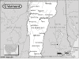

Vermont

Attention: If you use this or any of the AIRS lists in any state, please report any bad phone numbers or emails to the webmaster. This is the responsibility of all users, including you. Thank you!
Tom Good
(solohobbit@aol.com)
CROSSROADS: Montpelier
Montpelier, 05602
PHONE: 802-229-0434
VW'S: splitties
COMMENTS:
currently unemployable and working on my 63 deluxe reno/resto. So few splitties in
this neck of the woods. Would love to help out if I can.
AVAILABLE:
most any time, but may be moving after September, 2000
familiar with: 1500, 1600
I CAN PROVIDE THE FOLLOWING SERVICES:
INTERNET ACCESS
TOOLS
TELEPHONE ACCESS
MECHANICAL HELP
COFFEE/TALK
CAMPING SPOT: MOVE IN!!! :)
Favorite beer type: Thick and chewy
Jon Casey
(jonc@valley.net)
CROSSROADS: I 91 exit 9
Hartland Four Corners, 05049
VW'S: 85 Westy
COMMENTS: retired businessman with mechanical experiance
AVAILABLE: any time I am in the area.. I am usually in VT or FL
familiar with: type4 engine
I CAN PROVIDE THE FOLLOWING SERVICES:
INTERNET ACCESS
TOOLS
TELEPHONE ACCESS
TRANSPORTATION HELP
MECHANICAL HELP
SPACE TO WORK ON BUS
STORAGE SPACE
PARTS AVAILABLE
COFFEE/TALK
CAMPING SPOT: 2 nights
SPARE ROOM: 2 nights
Favorite beer type: Non Alcoholic
zed
(rerun5000@aol.com)
CROSSROADS: interstate 89 and vt rt.2w
Burlington, 05401
PHONE: 802-862-7427
VW'S: 1974 westy, 65 type 3 ghia, 65 notch, 71 trans. 73 914, 65 sundial camper
COMMENTS: i have lots of expereince with fixing busses in a pinch. i also have a
shop where larger projects can be completed ie; engine rebuilds etc. were an all
air-cooled shop that has been in the heart of Burlington for 27 years. we all drive
busses and have much love for all fellow bus drivers
AVAILABLE: 9-3 m-sat
familiar with: 25hp, 36hp, Bastard40hp, 1200, 1300, 1500, 1600, 1776+, dual carbs, fuel
injection
I CAN PROVIDE THE FOLLOWING SERVICES:
INTERNET ACCESS
TOOLS
TELEPHONE ACCESS
MECHANICAL HELP
SPACE TO WORK ON BUS
PARTS AVAILABLE
COFFEE/TALK
SPARE ROOM: 3 nights
Favorite beer type: Micro brands
Brian Hayes
(brianhayesvt@hotmail.com)
CROSSROADS: Exit 14w off Interstate 89
Burlington, 05401
VW'S: 1970 Westy, 1973 Adventure Series, 1976 Westy
COMMENTS: Experience with 1600 uprights, 1800&2000 pancakes. Teardowns,
rebuilds, diagnosis, and quick fixes. Also capalbe of brakes, carbs, CV joints, and
tranys.
Willing to drive distances to assist breakdowns, and provide transportation & assist
in repairs.
AVAILABLE: Mon-Fri
familiar with: 1600, 1776+, dual carbs, fuel injection, type4 engine
I CAN PROVIDE THE FOLLOWING SERVICES:
TOOLS
TELEPHONE ACCESS
TRANSPORTATION HELP
MECHANICAL HELP
PARTS AVAILABLE
COFFEE/TALK
Favorite beer type: Micro brands
T. Hugo
EMAIL: crukab@aol.com
CROSSROADS: 89 & 91 in Vt.
CITY: Royalton, 05068
PHONE: 802-763-5998
VW'S: 91 vanagon carat/wlfsbrg. ,86 crewcab ,63 crewcab,82 rabit truck, 90 jetta, 65 bus,
89 fox wagon ect.
COMMENTS: 20year Vw fanatic, not a mechanic, but can do most repairs
Busy family life, not much spare time , but I'll help ya if ya need something.
AVAILABLE: eves til 10 pm & saturdays
I am familiar with: 1200, 1500, 1600, type4 engine
I CAN PROVIDE THE FOLLOWING SERVICES
INTERNET ACCESS
TOOLS
TELEPHONE ACCESS
MECHANICAL HELP
SPACE TO WORK ON BUS
STORAGE SPACE
CAMPING: 1 night
SPARE ROOM: none
Favorite beer type: Anything cold
Joel Bartlett
EMAIL: jtbartlett22_at_yahoo_dot_com
CROSSROADS: I-91 & Route 2 St. Johnsbury, VT
CITY: St. Johnsbury, 05819
VW'S: 1965 Sedan
AVAILABLE: Mon-Sun after 6PM
I am familiar with: 1200, 1300, 1500, 1600, 1776+, dual carbs
I CAN PROVIDE THE FOLLOWING SERVICES
TOOLS
TELEPHONE ACCESS
MECHANICAL HELP
SPACE TO WORK ON BUS
STORAGE SPACE
SOME PARTS
CAMPING: 1 night
SPARE ROOM: none
Favorite beer type: Anything cold
Kevin
EMAIL: CTTAPER@aol.com
CROSSROADS: RT 15 & RT128
ESSEX JCT, 05452
PHONE: 802-878-1023
VW'S: 80 Westy
COMMENTS: Familar with type 4 motors mostly vanagon as far as front ends and
stuff. If I can't help I can send you in the right direction.
AVAILABLE: Almost any time
I am familiar with: type4 engine
I CAN PROVIDE THE FOLLOWING SERVICES
INTERNET ACCESS
TOOLS
TELEPHONE ACCESS
TRANSPORTATION HELP
MECHANICAL HELP
SPACE TO WORK ON BUS
COFFEE/TALK
CAMPING: none
SPARE ROOM: none
Favorite beer type: Micro brands
Marko
EMAIL: mnigels_at_us_dot_ibm_dot_com
CROSSROADS: I-189 and Rt 7
Burlington, 05401
PHONE: 902 660 9508
VW'S: 1977 westy
COMMENTS: I fumble through problems with my bus, but there's an
air cooled Vdub shop 1 mile from my house and those
guys are experts. I can help hook you up with them if needed.
AVAILABLE: anytime
I am familiar with: 1776+
I CAN PROVIDE THE FOLLOWING SERVICES
INTERNET ACCESS
TOOLS
TELEPHONE ACCESS
TRANSPORTATION HELP
MECHANICAL HELP
SPACE TO WORK ON BUS
CAMPING: none
SPARE ROOM: none
Favorite beer type: Thick and chewy
Tim Watson
EMAIL: tim_at_solutionscripts_dot_com
CROSSROADS: rt15, rt108
CITY: Jeffersonville, 05464
PHONE: 802-644-5167
VW'S: 66 Bus
COMMENTS: know a little bit of everything, but an expert on nothing... (for the
most part)
AVAILABLE: anytime.... I work at home..
I CAN PROVIDE THE FOLLOWING SERVICES
INTERNET ACCESS
TOOLS
TELEPHONE ACCESS
TRANSPORTATION HELP
MECHANICAL HELP
SPACE TO WORK ON BUS
STORAGE SPACE
SOME PARTS
COFFEE/TALK
CAMPING: 2 nights
SPARE ROOM: 2 nights
Favorite beer type: Micro brands
John Hamill The Johnnay
EMAIL: Johnscarcorner_at_yahoo_dot_com
CROSSROADS: Rte5 & I-91 (exit 5)
CITY: Westminster
ZIP CODE: 05158
PHONE: 802-722-3180
VW'S: all
COMMENTS: VWs since the mid 60s all models & all years
AVAILABLE: Mon thru Friday 9 to 5; Saturdays from 9 to 1
I am familiar with: 25hp, 36hp, Bastard40hp, 1200, 1300, 1500, 1600, 1776+, dual
carbs, fuel injection, type4 engine, wasserboxer, diesel, conversions
I CAN PROVIDE THE FOLLOWING SERVICES
INTERNET ACCESS
TOOLS
TELEPHONE ACCESS
TRANSPORTATION HELP
MECHANICAL HELP
SPACE TO WORK ON BUS
STORAGE SPACE
SOME PARTS
COFFEE/TALK
CAMPING: 1 night
SPARE ROOM: none
Favorite beer type: Room temp will do.
Andrew Ford
EMAIL: Andy325_at_comcast_dot_net
CROSSROADS: I83 & Warren Rd.
CITY: Baltimore & Burlington
STATE: MD & VT ZIP CODE: 21111 & 05401
ONLY CALL IF EMERGENCY PHONE: 410-409-1824
VW'S: 83 1/2 Campmobile; 68 Porsche 912; 01 Passat
COMMENTS: I am a college student reared with a considerable knowledge for VW's.
The 68 912 was my first car. Can provide a tow, reference several
mechanics if I am unable to assist. Generally ease the pain a little for
breaking down because we all know it happens.
AVAILABLE: I am generally available 24 hrs. a day, 7 days a week.
I am familiar with: 1200, 1300, 1500, 1600, 1776+, dual carbs, fuel injection
I CAN PROVIDE THE FOLLOWING SERVICES
INTERNET ACCESS
TOOLS
TELEPHONE ACCESS
TRANSPORTATION HELP
MECHANICAL HELP
SOME PARTS
CAMPING: none SPARE ROOM: MOVE IN!!! :)
Favorite beer type: Micro brands
Johnny
EMAIL: jmsnwboarder_at_yahoo_dot_com
CROSSROADS: I-91 and I-93
CITY: Lyndonville
ZIP CODE: 05851
PHONE: 551-206-1885
VW'S: 1968 VW bus
AVAILABLE: anytime
I am familiar with: 1600
I CAN PROVIDE THE FOLLOWING SERVICES
INTERNET ACCESS
TELEPHONE ACCESS
TRANSPORTATION HELP
SPACE TO WORK ON BUS
COFFEE/TALK
CAMPING: 1 night SPARE ROOM: none
Favorite beer type: Rare brands
Dave Phillips
EMAIL:davephillips61_at_gmail_dot_com
CROSSROADS: I 89 and Vermont Route 132
CITY: Sharon
PHONE: (802) 763-2025
VW'S: '59 walk thru Panel and '91 Westy
COMMENTS: Bus junkie for 20+ years. Willing to help if I can or send you
in the right direction if I can't!
AVAILABLE: Pretty much anytime. Just give me a call
I am familiar with: 36hp, 1200, 1500, 1600
I CAN PROVIDE THE FOLLOWING SERVICES
INTERNET ACCESS
TOOLS
TELEPHONE ACCESS
TRANSPORTATION HELP
MECHANICAL HELP
SPACE TO WORK ON BUS
SOME PARTS
COFFEE/TALK
CAMPING: 2 nights SPARE ROOM: none
Favorite beer type: Micro brands
Bryan
EMAIL: vt_dot_bryan_at_gmail_dot_com
CROSSROADS: I-91 and Rt. 5
CITY: Rockingham
ONLY CALL IF AN EMERGENCY PHONE:
802-732-8190
VW'S: 1977 VW Camper/bus , 2004 VW Passat
COMMENTS: Me and my wife bought the van so we can restore and travel the
country.
I CAN PROVIDE THE FOLLOWING SERVICES:
INTERNET ACCESS
TOOLS
TELEPHONE ACCESS
TRANSPORTATION HELP
CAMPING: none SPARE ROOM: none
Favorite beer type: Micro brands
Craig
EMAIL: craig_dot_henson_at_gmail_dot_com
CROSSROADS: RT 11 & 7
CITY: Peru ZIP CODE: 05152
PHONE: 802 824-6129
VW'S: 87 Westfalia
COMMENTS: Not much of a mechanic, but several good ones are in the area. Happy
to meet travelers who want a quiet place to camp for a few days or explore
southern Vermont.
AVAILABLE: Call between 6AM and 9PM. Free weekends.
I CAN PROVIDE THE FOLLOWING SERVICES
TOOLS
TELEPHONE ACCESS
TRANSPORTATION HELP
MECHANICAL HELP
SPACE TO WORK ON BUS
SOME PARTS/CAN GET THEM
CAMPING: 3 nights
SPARE ROOM: CALL ME/IT DEPENDS
Favorite beer type: Anything cold
{kind=link}